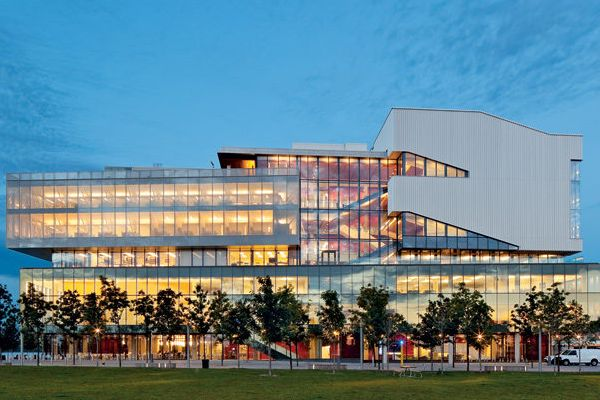

George brown college
George Brown College of Applied Arts and Technology is a public, fully accredited college of applied arts and technology with three full campuses in downtown Toronto. Like many other colleges in Ontario, GBC was chartered in 1966 by the government of Ontario and opened the next year.
| GEORGE BROWN COLLEGE | ||||
| St. James | ||||
| Casa Loma | ||||
| Waterfront | ||||
| Ryerson | ||||
| INTAKES | ||||
| September, January, May | ||||
| AVG TUITION FEES | ||||
| Program | Credential | Intake | Campus | Duration |
| Acting for Media Program | Diploma | January, September | St. James Campus | 2 years |
| Activation Co-ordinator/Gerontology Program | Diploma | September | Waterfront Campus | 2 years |
| Advanced French Patisserie Program | Post – Graduate | May | St. James Campus | 1 year |
| Advanced Wine and Beverage Business Management Program | Post – Graduate | September | St. James Campus | 1 year |
| Analytics for Business Decision Making Program | Post – Graduate | September | St. James Campus | 1 year |
| Apparel Technical Design | Post – Graduate | September | Casa Loma Campus | 1 year |
| Architectural Technician Program | Diploma | January, September | Casa Loma Campus | 2 years |
| Architectural Technology Program | Advanced Diploma | January, September | Casa Loma Campus | 3 years |
| Art and Design Foundation Program | Certificate | January, September | St. James Campus | 1 year |
| Assaulted Women’s and Children’s Counsellor/Advocate Program | Diploma | September | St. James Campus | 2 years |
| Autism and Behavioural Science Program | Post – Graduate | September | Waterfront Campus | 1 Year |
| Baking – Pre-employment Program | Certificate | January | St. James Campus | 1 year |
| Baking and Pastry Arts Management Program | Diploma | May, September | St. James Campus | 2 years |
| Behavioural Science Technician Program | Diploma | September | Waterfront Campus | 2 years |
| Behavioural Science Technician Program (Intensive) | Diploma | September | Waterfront Campus | 1 year |
| Blockchain Development Program | Certificate | January, September | Casa Loma Campus | 1 year |
| Building Information Modeling (BIM) Management Program | Post – Graduate | January, September | Casa Loma Campus | 1 year |
| Building Renovation Technician Program | Diploma | January, September | Casa Loma Campus | 2 years |
| Building Renovation Technology Program | Advanced Diploma | January, September | Casa Loma Campus | 3 years |
| Business – Accounting Program | Diploma | January, September | St. James Campus | 2 years |
| Business – Finance | Diploma | January, September | St. James Campus | 2 years |
| Business Administration – Accounting Program | Advanced Diploma | January, September | St. James Campus | 3 years |
| Business Administration – Finance Program | Advanced Diploma | January, September | St. James Campus | 3 years |
| Business Administration – Human Resources Program | Advanced Diploma | January, September | St. James Campus | 3 years |
| Business Administration – Marketing Program | Advanced Diploma | January, September | St. James Campus | 3 years |
| Business Administration – Retail Program | Advanced Diploma | September | St. James Campus | 3 years |
| Business Administration Program | Advanced Diploma | January, September | St. James Campus | 3 years |
| Business Administration – International Business Program | Advanced Diploma | January, September | St. James Campus | 3 years |
| Business Administration – Project Management Program | Advanced Diploma | January, September | St. James Campus | 3 years |
| Business Administration – Supply Chain and Operations Management Program | Advanced Diploma | January, September | St. James Campus | 3 years |
| Business Program | Diploma | January, September | St. James Campus | 2 years |
| Business – Human Resources Program | Diploma | January, September | St. James Campus | 2 years |
| Business – Marketing Program | Diploma | January, September | St. James Campus | 2 years |
| Career Development Practitioner Program | Post – Graduate | September | St. James Campus | 1 year |
| Child and Youth Care Program | Advanced Diploma | September | St. James Campus | 3 years |
| Child and Youth Care Program (Fast-Track) | Advanced Diploma | January | St. James Campus | 1 year |
| Civil Engineering Technology Program | Advanced Diploma | January, September | Casa Loma Campus | 3 years |
| Commercial Dance Program | Certificate | September | Casa Loma Campus | 1 year |
| Community Worker Program | Diploma | September | St. James Campus | 2 years |
| Computer Programmer Analyst Program | Advanced Diploma | January, September | Casa Loma Campus | 3 years |
| Computer Systems Technician Program | Diploma | January, September | Casa Loma Campus | 2 years |
| Computer Systems Technology Program | Advanced Diploma | January, September | Casa Loma Campus | 3 years |
| Concept Art for Entertainment program | Post – Graduate | September | St. James Campus | 1 year |
| Construction Engineering Technician Program | Diploma | January, September | Casa Loma Campus | 2 years |
| Construction Engineering Technology Program | Advanced Diploma | January, September | Casa Loma Campus | 3 years |
| Construction Management Program (for Internationally Educated Professionals) | Post – Graduate | January | Casa Loma Campus | 1 year |
| Construction Trades Techniques Program | Certificate | January, May, September | Casa Loma Campus | 1 year |
| Consulting Program | Post – Graduate | January, September | St. James Campus | 1 year |
| Culinary Arts – Italian Program (Postgraduate) | Post – Graduate | May | St. James Campus | 1 year |
| Culinary Management Program | Diploma | January, May, September | St. James Campus | 2 years |
| Culinary Management Program (Integrated Learning) | Diploma | January, May, September | St. James Campus | 2 years |
| Culinary Management – Nutrition Program | Diploma | September | St. James Campus | 2 years |
| Culinary Skills Program | Certificate | January, May, September | St. James Campus | 1 year |
| Dance Performance Preparation Program | Certificate | September | Casa Loma Campus | 1 year |
| Dance Performance Program | Diploma | September | Casa Loma Campus | 2 years |
| Dental Assisting Program (Levels I and II) | Certificate | September | Waterfront Campus | 1 year |
| Dental Office Administration Program | Certificate | September | Waterfront Campus | 1 year |
| Dental Technology Program | Advanced Diploma | September | Waterfront Campus | 3 years |
| Design Management Program | Post – Graduate | September | St. James Campus | 1 year |
| Digital Design – Game Design Program | Post – Graduate | September | St. James Campus | 1 year |
| Early Childhood Assistant Program | Certificate | January | George Brown College at Ryerson University | 1 year |
| Early Childhood Education Program | Diploma | January, September | George Brown College at Ryerson University | 2 years |
| Early Childhood Education Program | Diploma | September | George Brown College at Ryerson University | 4 years |
| Electrical Techniques Program | Certificate | May | Casa Loma Campus | 1 year |
| Electromechanical Engineering Technician Program | Diploma | January, September | Casa Loma Campus | 2 years |
| Electromechanical Engineering Technology – Building Automation Program | Advanced Diploma | January, September | Casa Loma Campus | 3 years |
| Entrepreneurship Management Program | Post – Graduate | January, September | St. James Campus | 1 year |
| Fashion Business Industry Program | Diploma | September | Casa Loma Campus | 2 years |
| Fashion Management | Diploma | January, September | Casa Loma Campus | 2 years |
| Fashion Techniques and Design Program | Diploma | January, September | Casa Loma Campus | 2 years |
| Financial Planning Program | Post – Graduate | January, September | St. James Campus | 1 year |
| Fitness and Health Promotion Program | Diploma | September | Waterfront Campus | 2 years |
| Food and Beverage Management – Restaurant Management Program | Diploma | January, May, September | St. James Campus | 2 years |
| Food and Nutrition Management Program | Post – Graduate | September | St. James Campus | 1 year |
| Game – Art Program | Advanced Diploma | January, September | St. James Campus | 3 years |
| Game – Programming Program | Advanced Diploma | January, September | Casa Loma Campus | 3 years |
| Gemmology Program | Certificate | September | Casa Loma Campus | 1 year |
| Graphic Design Program | Advanced Diploma | January, September | St. James Campus | 3 years |
| Health Informatics Program | Post – Graduate | January, September | Casa Loma Campus | 1 year |
| Health Informatics Program | Post – Graduate | January, September | Casa Loma Campus | 1 year |
| Health Information Management Program | Diploma | September | Waterfront Campus | 2 years |
| Hearing Instrument Specialist Program | Advanced Diploma | September | Waterfront Campus | 3 years |
| Heating, Refrigeration and Air Conditioning Technician Program | Diploma | January, September | Casa Loma Campus | 2 years |
| Heating, Refrigeration and Air Conditioning Technology Program | Advanced Diploma | January, September | Casa Loma Campus | 3 years |
| Honours Bachelor of Behaviour Analysis Program | Bachelor Degree | September | Waterfront Campus | 4 years |
| Honours Bachelor of Behaviour Analysis Program (Intensive) | Bachelor Degree | May | Waterfront Campus | 3 Years |
| Honours Bachelor of Business Administration (Hospitality) | Bachelor Degree | September | St. James Campus | 4 years |
| Honours Bachelor of Commerce (Culinary Management) | Bachelor Degree | September | St. James Campus | 4 years |
| Honours Bachelor of Commerce (Financial Services) | Bachelor Degree | January, September | St. James Campus | 4 years |
| Honours Bachelor of Digital Experience Design | Bachelor Degree | January, September | St. James Campus | 4 years |
| Honours Bachelor of Early Childhood Leadership Program | Bachelor Degree | September | George Brown College at Ryerson University | 4 years |
| Honours Bachelor of Early Childhood Leadership Program(Fast-Track) | Bachelor Degree | September | George Brown College at Ryerson University | 2 years |
| Honours Bachelor of Interpretation Program | Bachelor Degree | September | St. James Campus | 4 years |
| Honours Bachelor of Technology | Bachelor Degree | September | Casa Loma Campus | 4 years |
| Hospitality – Hotel Operations Management Program | Diploma | January, May, September | St. James Campus | 2 years |
| Human Resources Management Program | Post – Graduate | January, May, September | St. James Campus | 1 year |
| Information Systems Business Analysis Program | Post – Graduate | January, September | Casa Loma Campus | 1 year |
| Interaction Design program | Advanced Diploma | January, September | St. James Campus | 3 years |
| Interactive Media Management Program | Post – Graduate | September | St. James Campus | 1 year |
| Interdisciplinary Design Strategy | Post – Graduate | September | St. James Campus | 1 year |
| Interior Design Technology Program | Advanced Diploma | January, September | Casa Loma Campus | 3 years |
| International Business Management Program | Post – Graduate | January, May, September | St. James Campus | 1 year |
| International Fashion Management | Post – Graduate | September | Casa Loma Campus | 1 year |
| Intervenor for Deafblind Persons Program | Diploma | September | St. James Campus | 2 years |
| Jewellery Arts Program | Advanced Diploma | September | Casa Loma Campus | 3 years |
| Jewellery Essentials Program | Certificate | September | Casa Loma Campus | 1 year |
| Jewellery Methods Program | Diploma | September | Casa Loma Campus | 2 years |
| Marketing Management – Financial Services Program | Post – Graduate | January, September | St. James Campus | 1 year |
| Mechanical Engineering Technology – Design Program | Advanced Diploma | January, September | Casa Loma Campus | 3 years |
| Mechanical Technician – CNC and Precision Machining | Diploma | January, September | Casa Loma Campus | 2 years |
| Media Foundation program | Certificate | January, September | St. James Campus | 1 year |
| Network and System Security Analysis Program | Post – Graduate | January, September | Casa Loma Campus | 1 year |
| Office Administration – Health Services Program | Diploma | January, September | Waterfront Campus | 2 years |
| Plumbing Techniques Program | Certificate | May | Casa Loma Campus | 1 year |
| Pre-Health Sciences Pathway to Certificates and Diplomas Program | Certificate | January, May, September | St. James Campus | 1 year |
| Project Management Program | Post – Graduate | January, May, September | St. James Campus | 1 year |
| Screenwriting and Narrative Design | Post – Graduate | September | St. James Campus | 1 year |
| Social Service Worker Program | Diploma | September | St. James Campus | 2 years |
| Sound Design and Production | Post – Graduate | September | St. James Campus | 1 year |
| Special Event Management Program | Diploma | January, May, September | St. James Campus | 2 years |
| Sport and Event Marketing Program | Post – Graduate | January, May, September | St. James Campus | 1 year |
| Strategic Relationship Marketing Program | Post – Graduate | January, September | St. James Campus | 1 year |
| Sustainable Fashion Production | Post – Graduate | September | Casa Loma Campus | 1 year |
| Theatre Arts-Preparation Program | Certificate | September | Young Centre for the Performing Arts | 1 year |
| Tourism and Hospitality Management Program | Diploma | January, May, September | St. James Campus | 2 years |
| Video Design and Production Program | Diploma | January, September | St. James Campus | 2 years |
| Visual Effects program | Post – Graduate | September | St. James Campus | 1 year |
| Welding Techniques Program | Certificate | May, September | Casa Loma Campus | 1 year |
| Wireless Networking Program | Post – Graduate | January, September | Casa Loma Campus | 1 year |